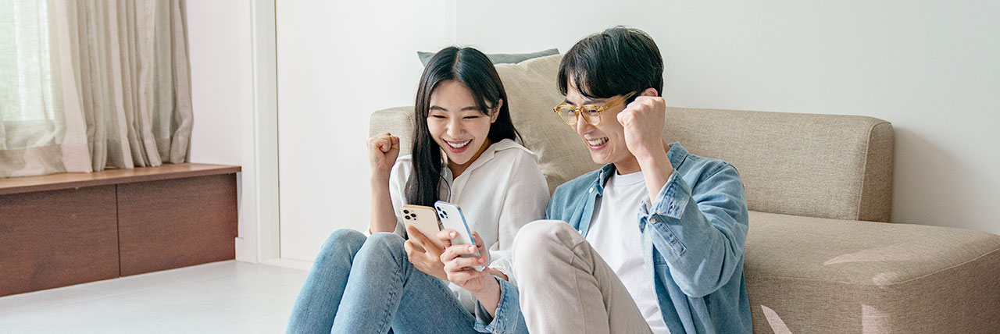

우리는 더 좋은 게임(Better Game)을
만들고 세상에 보여주기 위해 모였습니다.
유저가 더 즐겁게 게임을 즐길 수 있도록,
세상보다 먼저 한 발자국 더 나아갑니다.
넥슨게임즈의 방식으로
더 좋은 게임을 만듭니다.
Who we are
arrow_left_alt prev
|
next arrow_right_alt

Interviewee.
윤진홍 님아트실 캐릭터팀
“제안하고 논의하며 성장합니다.”
우리는 같은 장르, 전형적인 룰로 게임을 만들지 않아요.
타 장르의 재미요소와 게임 외 재미들을 융합해 새로운 재미를 만듭니다.
제 아이디어가 개발로 이어지기도, 이어지지 않기도 하지만,
뛰어난 동료들과 함께 논의하는 과정에서 매일 한 걸음 씩 더 성장함을 느껴요.

Interviewee.
윤진홍 님아트실 캐릭터팀
“제안하고 논의하며 성장합니다.”
우리는 같은 장르, 전형적인 룰로 게임을 만들지 않아요.
타 장르의 재미요소와 게임 외 재미들을 융합해 새로운 재미를 만듭니다.
제 아이디어가 개발로 이어지기도, 이어지지 않기도 하지만,
뛰어난 동료들과 함께 논의하는 과정에서 매일 한 걸음 씩 더 성장함을 느껴요.
News
more
arrow_forward
퍼스트 디센던트 | 2023.08.21
점프부터 총기까지 전부 다 개선했다 -
'퍼스트 디센던트' 개발진 인터뷰
이번 인터뷰에는 넥슨게임즈 매그넘 스튜디오의 이범준 PD와 주민석 디렉터가 자리했다.
히트2 | 2023.08.18
1주년 맞은 ‘히트2’… 대규모 업데이트 및 이벤트 계획 공개
넥슨의 모바일·PC MMORPG ‘히트2’가 출시 1주년을 맞아 더욱 풍성해진 구성의 업데이트 프리뷰 영상 ‘히트투데이’를 18일 공개했다.
서든어택 | 2023.08.18
넥슨 인기 게임간 컬래버...서든어택에 시로코·아스나 소총 깜짝 등장
넥슨의 장수 FPS(1인칭 슈팅) 게임 '서든어택'이 은행강도 미소녀와 컬래버레이션한다. 그 정체는 같은 개발사의 '블루 아카이브'에 등장하는 캐릭터다.
Careers
지원하기
arrow_forward

새로운 재미, 교류와 공감의 세계를 창조할
게이머들과 함께하고 싶습니다.